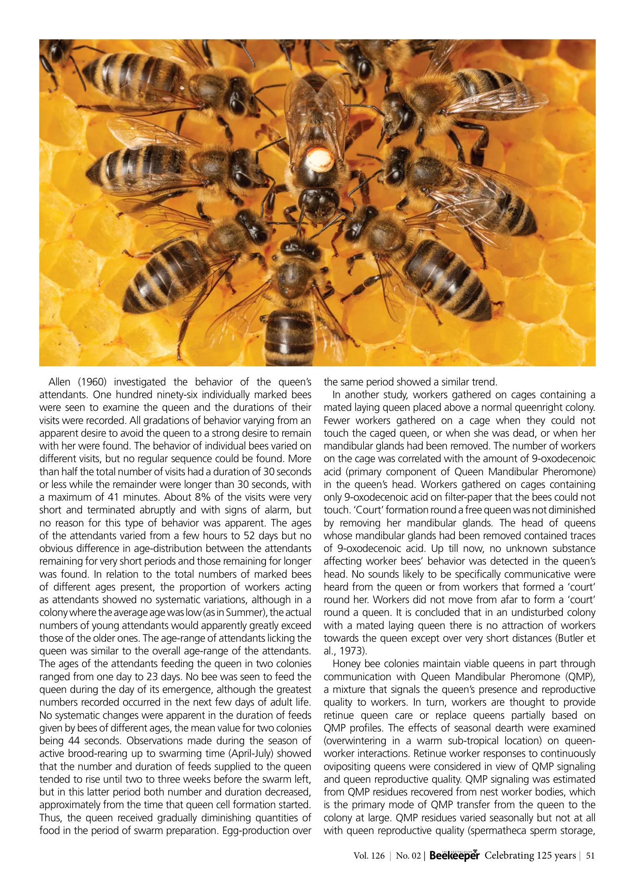

Allen (1960) investigated the behavior of the queen’s
attendants. One hundred ninety-six individually marked bees
were seen to examine the queen and the durations of their
visits were recorded. All gradations of behavior varying from an
apparent desire to avoid the queen to a strong desire to remain
with her were found. The behavior of individual bees varied on
different visits, but no regular sequence could be found. More
than half the total number of visits had a duration of 30 seconds
or less while the remainder were longer than 30 seconds, with
a maximum of 41 minutes. About 8% of the visits were very
short and terminated abruptly and with signs of alarm, but
no reason for this type of behavior was apparent. The ages
of the attendants varied from a few hours to 52 days but no
obvious difference in age-distribution between the attendants
remaining for very short periods and those remaining for longer
was found. In relation to the total numbers of marked bees
of different ages present, the proportion of workers acting
as attendants showed no systematic variations, although in a
colony where the average age was low (as in Summer), the actual
numbers of young attendants would apparently greatly exceed
those of the older ones. The age-range of attendants licking the
queen was similar to the overall age-range of the attendants.
The ages of the attendants feeding the queen in two colonies
ranged from one day to 23 days. No bee was seen to feed the
queen during the day of its emergence, although the greatest
numbers recorded occurred in the next few days of adult life.
No systematic changes were apparent in the duration of feeds
given by bees of different ages, the mean value for two colonies
being 44 seconds. Observations made during the season of
active brood-rearing up to swarming time (April-July) showed
that the number and duration of feeds supplied to the queen
tended to rise until two to three weeks before the swarm left,
but in this latter period both number and duration decreased,
approximately from the time that queen cell formation started.
Thus, the queen received gradually diminishing quantities of
food in the period of swarm preparation. Egg-production over
the same period showed a similar trend.
In another study, workers gathered on cages containing a
mated laying queen placed above a normal queenright colony.
Fewer workers gathered on a cage when they could not
touch the caged queen, or when she was dead, or when her
mandibular glands had been removed. The number of workers
on the cage was correlated with the amount of 9-oxodecenoic
acid (primary component of Queen Mandibular Pheromone)
in the queen’s head. Workers gathered on cages containing
only 9-oxodecenoic acid on filter-paper that the bees could not
touch. ‘Court’ formation round a free queen was not diminished
by removing her mandibular glands. The head of queens
whose mandibular glands had been removed contained traces
of 9-oxodecenoic acid. Up till now, no unknown substance
affecting worker bees’ behavior was detected in the queen’s
head. No sounds likely to be specifically communicative were
heard from the queen or from workers that formed a ‘court’
round her. Workers did not move from afar to form a ‘court’
round a queen. It is concluded that in an undisturbed colony
with a mated laying queen there is no attraction of workers
towards the queen except over very short distances (Butler et
al., 1973).
Honey bee colonies maintain viable queens in part through
communication with Queen Mandibular Pheromone (QMP),
a mixture that signals the queen’s presence and reproductive
quality to workers. In turn, workers are thought to provide
retinue queen care or replace queens partially based on
QMP profiles. The effects of seasonal dearth were examined
(overwintering in a warm sub-tropical location) on queen-
worker interactions. Retinue worker responses to continuously
ovipositing queens were considered in view of QMP signaling
and queen reproductive quality. QMP signaling was estimated
from QMP residues recovered from nest worker bodies, which
is the primary mode of QMP transfer from the queen to the
colony at large. QMP residues varied seasonally but not at all
with queen reproductive quality (spermatheca sperm storage,
Vol. 126 | No. 02 |
Celebrating 125 years | 51